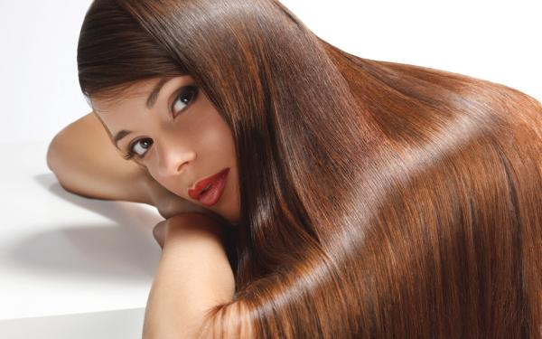
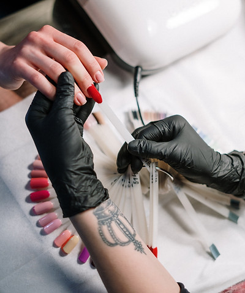

Arah Rodz Beauty Studio
Servicios
LAVADO
El primero de los servicios, el más importante. Lavarte el cabello previo a un corte o peinado y/o luego de una coloración: hace al inicio y/o la finalización perfecta de tu experiencia en Arah. Contamos con las mejores manos en nuestro equipo y una amplia variedad de marcas Premium que te garantizan un momento único. Las grandes marcas de la cosmética argentina, francesa, británica, italiana entre otras, dan garantía de formación para la persona que te lavará el pelo y un producto a medida según deseo y necesidad. Contarás con el asesoramiento preciso sobre tu cuero cabelludo y pelo para lograr la excelencia y confort que necesitas. No te pierdas una de las mejores experiencias en Arah Rodz Beauty Studio.
CORTES
Tijeras, máquinas, varios filos, precisión, técnica y sobre todo un estilo único hacen fundamental el Corte. ¡Nuestro equipo de profesionales podrá asesorarte y hacer lucir tu pelo con el look ideal! El pelo es el accesorio más importante que tenemos. El Team Arah de corte y peinado está en constante perfeccionamiento sobre nuevas técnicas y tendencias. No dudes en dejarte asesorar. Cada uno de ellos se destaca en poder interpretar tu deseo y adaptarlo para un fácil y práctico día a día. Nuestro corte es diseñado exclusivamente para vos y tu vida cotidiana.
PEINADOS
Existe una amplia forma de llegar a tu peinado, Brushing, planchitas, ondas, y muchos más.
COLORACIÓN
El servicio de color es un universo infinito dentro de nuestro salón. Nuestra marca cuenta con el mejor equipo de coloristas del país. Nos perfeccionamos constantemente para poder abordar todas tus necesidades. Te asesoramos de una manera minuciosa para poder aconsejarte sobre qué es lo que tu cabello necesita. Cuáles son los pasos que llevara tu pelo para llegar al objetivo que deseas. Nuestra misión fundamental es mantener tu pelo sano y que luzca intacto, garantizamos tu felicidad absoluta. Como expresamos anteriormente, el universo de color es inmenso e infinito, por eso y para orientarte, te invitamos a que leas atentamente cada una de las descripciones de toda nuestra carta de servicios en color que tenemos para lograr satisfacer tus necesidades.
TRATAMIENTOS PARA TU CABELLO
Keratina, Brillo, Hidratación, Nutrición, Reparación y Reconstrucción.
MANOS Y PIES
El cuidado de las uñas ha tomado auge en los últimos años y se ha convertido en un accesorio fundamental de la moda. En Arah abogamos por brindar un servicio de excelencia en cuanto técnicas y vanguardias en el mundo del nail art. Ofrecemos servicios tanto permanentes como semipermanente, kapping, esculpidas. Consultanos por las Arah nails.
